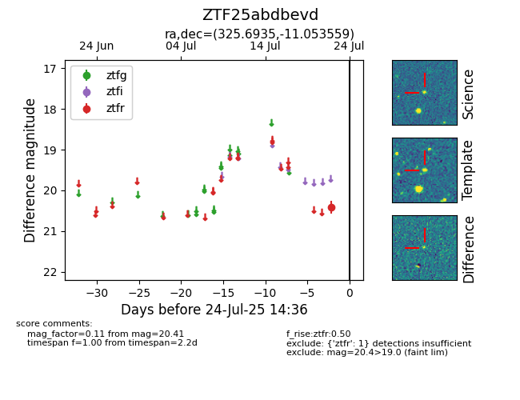

Target ZTF25abdbevd at 2025-07-24 14:36, see:
FINK: fink-portal.org/ZTF25abdbevd
Lasair: lasair-ztf.lsst.ac.uk/objects/ZTF25abdbevd
ALeRCE: alerce.online/object/ZTF25abdbevd
alt names
ZTF25abdbevd (ztf,fink)
coordinates:
equatorial (ra, dec) = (325.6935,-11.05356)
galactic (l, b) = (43.4500,-42.94383)
photometry
last ztfr=20.41
1 ztfr detections
